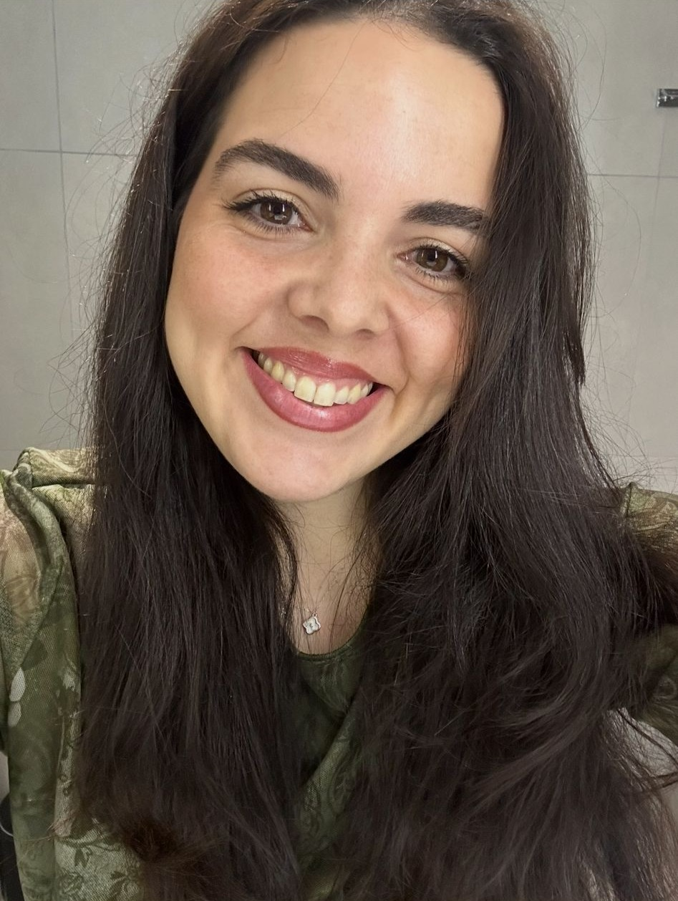

Maria Dolores Barrios Nevado
HCPC Registered Clinical Psychologist
Perfil Profesional
Psicóloga Clínica con formación internacional y amplia experiencia en el NHS. Ofrezco terapia basada en evidencia a niños, adolescentes y adultos. Sólida formación en neuropsicología, evaluación cognitiva y manejo de casos complejos. He trabajado en entornos de adultos, forenses, CAMHS y neurorrehabilitación, tanto hospitalización como ambulatorio. Me dedico a una atención compasiva, colaborativa y de alta calidad centrada en la persona. Actualmente desarrollo mi especialización en Terapia de Esquemas para abordar trauma complejo y trastornos de personalidad.

Educación
- MSc General Health Psychology, University of Cordoba, Spain (2017–2019)
- MSc Clinical Neuropsychology, University of Almeria, Spain (2016–2019)
- BSc Psychology, University of Jaen, Spain (2012–2016)
- HCPC Period of Adaptation, London, UK (2021–2023)
- Diploma of Higher Education in CBT (2022)
- ISST Approved Training: Schema Therapy Systems – Adult Individual (2024–en curso)
Experiencia Clínica
Liderazgo en evaluación psicológica, terapia y planificación de alta para adolescentes. Enfoque holístico informado en trauma (ACT, CFT, CBT, Terapia de Esquemas).
Servicios psicológicos integrales para adultos con trastornos mentales graves y antecedentes forenses. Evaluación de riesgo (HCR-20), intervenciones individuales y grupales.
Evaluaciones especializadas para casos forenses complejos (CI, personalidad, escalas de síntomas) y planes de tratamiento. Informes oficiales y colaboración con equipos multidisciplinarios.
Evaluación especializada e intervenciones breves para niños menores de 6 años y sus familias. Enfoque cognitivo-conductual en TEA, discapacidad intelectual, problemas de conducta y apego.
Herramientas de Evaluación y Competencias
- ADOS-2 – Evaluación del Trastorno del Espectro Autista
- HCR-20 V3 – Evaluación de riesgo forense
- WAIS-IV / WISC-V – Evaluación cognitiva y de inteligencia
- Stroop Test, Rey Complex Figure – Evaluación neuropsicológica
- Inventarios de Personalidad (PAI, MCMI-IV)
- FFXX, SARA – Herramientas forenses específicas
Enfoques Terapéuticos y Formaciones
- Terapia de Esquemas – Formación aprobada por ISST (en curso)
- Terapia Cognitivo-Conductual (CBT) – Diploma (2022)
- Terapia de Aceptación y Compromiso (ACT)
- Terapia Centrada en la Compasión (CFT)
- Atención Informada en Trauma e intervenciones en TEPT
- Apoyo Conductual Positivo (PBS)
Idiomas
- 🇬🇧 Inglés – Fluido (terapia e informes)
- 🇪🇸 Español – Lengua materna (fluido)
Membresías y Registros Profesionales
- ✅ HCPC – Psicóloga Clínica Registrada (Reino Unido)
- 📋 ISST – International Society of Schema Therapy (Miembro / en formación)
Investigación y Publicaciones
- Rivera, D., et al. (2017). Stroop Color-Word Interference Test: Normative data for Spanish-speaking paediatric population. NeuroRehabilitation, 41(3), 605-616.
- Arango-Lasprilla, J.C., et al. (2017). Rey–Osterrieth Complex Figure: Normative data for Spanish-speaking paediatric populations. NeuroRehabilitation, 41(3), 593-603.